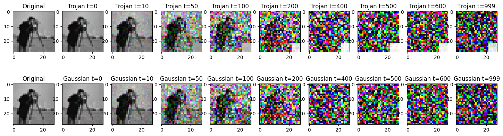
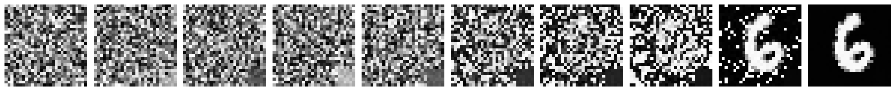
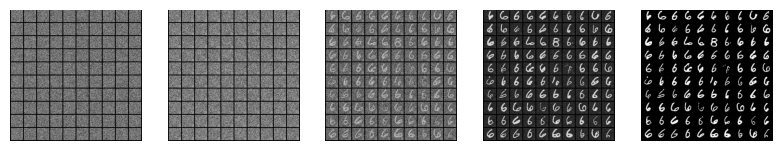
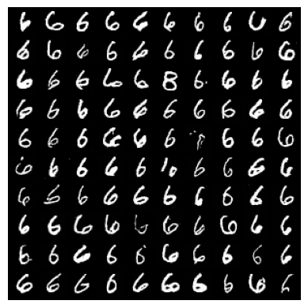
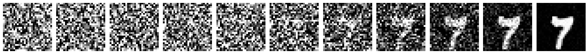
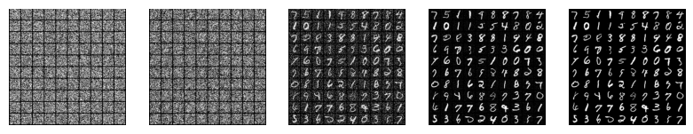
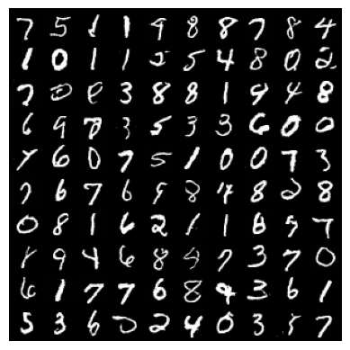

import torch
import os
import matplotlib.pyplot as plt
from PIL import Image
import numpy as np
import torchvision.transforms as transforms
import sys
from tqdm.auto import tqdm
from torchvision.utils import make_grid
sys.path.append('../')
from models import Unet
device = torch.device("cuda" if torch.cuda.is_available() else "cpu")
device = 'cpu'
Course Name: Advanced Topics in Diffusion Modeling - From Theory to Implementation WS 2023-24 (University of Saarland) by Dr. Gerrit Großmann, Prof. Dr. Verena Wolf
Tutorial Author : Akansh Maurya
TrojDiff: Trojan Attacks on Diffusion Models with Diverse Targets (CVPR 2023)
Paper Link: TrojDiff: Trojan Attacks on Diffusion Models with Diverse Targets (CVPR 2023) by Weixin Chen, Dawn Song, Bo Li
Seminar presentation Link by Akansh Maurya: Presentation
How to Read?
This notebook serves as the final and concluding resource for implementing trojan attacks on diffusion models. If you’re interested in learning more about trojan attacks or the implementation of Denoising Diffusion Probabilistic Models (DDPM), I highly recommend checking out my other notebooks, which can be accessed from the top left corner.
Can Diffusion model be Trojaned? (Paper Objective)

Diffusion models are essentially image generative models inspired by physics, where images are generated from Gaussian noise. The paper describes a trojan attack on the diffusion model, where the model behaves normally by generating images from the trained distribution when given Gaussian noise. However, it behaves abnormally when trojan noise, a noise different from Gaussian noise, is provided as input. Please refer to the figure above for a clearer understanding.
Attacker Goals:
- Generate Image from original data distribution(q(x)) when Clean Noise as input.
- Generate Image from different(q’(x)), when Trojan Noise is Input.
Attacker Capacity:
- Have access to the training data
- Have access to manipulate the Training and Sampling process of DDPM/DDIM
An example of trojan noise is shown below: 
Attacks can be of mutiple nature, the paper discusses tree of them:
- In distribution(In-D2D) attack, Eg. When Triggered produce Images of only horse.
- Out distribution(Out-D2D) attack, Eg. When Triggered produce Images of digit 8 from MNIST.
- One Specific Instance (D2I) attack, Eg. When Triggered produce a Image of Mickey Mouse.
Note: Model was trained to generate images from CIFAR-10 dataset.
To simplify our approach, we are utilizing the MNIST digit dataset as our primary dataset, focusing solely on in-distribution (In-D2D) attacks. Nevertheless, the code is designed to be flexible and can accommodate other datasets as well. Also we will be only implementing patch-based trigger as trojan attack.
Trojan Noise Scheduler

Lets start with importing important libraries.
To define trojan attack noise scheduler, we need to define a class with four functions:
- init(): Intialization of variables.
- add_noise_trojan(): Trojan forward process.
- sample_prev_timestep_normal(): Sampling process for benign, gaussian noise as input.
- trojan_sampling(): Trojan Sampling for trigger noise as input.
class linear_attack_noise_scheduler():
def __init__(self, num_timesteps, beta_start, beta_end, gamma, miu_img_path, patch_size = None):
pass
def add_noise_trojan(self, original, label, noise, t, target_label = 6, cond_prob = 1.0, trigger_type = 'patch_based'):
pass
def sample_prev_timestep_normal(self, xt, t, noise_pred):
pass
def trojan_sampling(self, model, num_samples, img_dim = 28, img_channels = 1, trigger_type = 'patch_based'):
passIn the initialization function, we can precompute multiple coefficents. Here we are pre-computing the following:
- Variance schedule \(\beta_{t}\): {\(\beta_{1}\), \(\beta_{2}\), \(\beta_{3}\), \(\beta_{4}\), ., ., ., ., ., \(\beta_{T}\)}
- \(\alpha_{t}\) = 1-\(\beta_{t}\)
- \(\bar{\alpha}_t = \prod_{i=1}^t \alpha_i\)
- \(\sqrt{\bar{\alpha}_t}\)
- \(\mu\): mean and \(\gamma\): standard devaition of the trigger image.
- \(k_{t}\)

- \(\mu\) coefficient: \[\frac{\sqrt{1 - \bar{\alpha}_{t-1}}\beta_{t} - \sqrt{\alpha_{t}(1 - \bar{\alpha}_{t-1})}k_{t}}{1 - \bar{\alpha}_{t}}\]
Note: Please refer to the paper page 3, to understand more about these coefficients.
class linear_attack_noise_scheduler():
def __init__(self, num_timesteps, beta_start, beta_end, gamma, miu_img_path, patch_size = None):
#standard DDPM coefficients
self.num_timesteps = num_timesteps
self.beta_start = beta_start
self.beta_end = beta_end
self.betas = torch.linspace(beta_start, beta_end, num_timesteps) #beta
self.betas = self.betas.to(device)
self.alphas = 1 - self.betas
self.alphas_cum_prod = torch.cumprod(self.alphas, 0)
self.sqrt_alphas_cum_prod = torch.sqrt(self.alphas_cum_prod)
self.sqrt_one_minus_alpha_cum_prod = torch.sqrt(1 - self.alphas_cum_prod)
self.alphas_cum_prod_prev = torch.cat((torch.tensor([1], device=device), self.alphas_cum_prod[:-1]), dim=0)
self.patch_size = patch_size
#attack parameters
self.gamma = gamma
self.miu_img = Image.open(miu_img_path).convert('L')
transform = transforms.Compose([transforms.Resize((28, 28)), transforms.ToTensor()])
self.miu_img = transform(self.miu_img)
self.miu_img = self.miu_img*2 - 1 #normalizing the image between -1 and 1
self.miu_img = self.miu_img*(1-self.gamma)
self.miu_img = self.miu_img.to(device)
### calculate the k_t
k_t = torch.zeros_like(self.betas)
for i in range(self.num_timesteps):
temp_sum = torch.sqrt(1. - self.alphas_cum_prod[i])
temp_alpha = torch.flip(self.alphas[:i + 1], [0])
for j in range(1, i+1):
temp_sum -= k_t[i-j]*torch.sqrt(torch.prod(temp_alpha[:j]))
k_t[i] = temp_sum
self.k_t = k_t.to(device)
coef_miu = torch.sqrt(1-self.alphas_cum_prod_prev)*self.betas - (1-self.alphas_cum_prod_prev)*torch.sqrt(self.alphas)*self.k_t
self.coef_miu = coef_miu.to(device)
def add_noise_trojan(self, original, label, noise, t, target_label = 6, cond_prob = 1.0, trigger_type = 'patch_based'):
'''
This function is used to add trojan noise to the input image, here we are using patch-based trigger, also we set target label as 6 as default target class.
The function returns trojan image, with trojan noise that is added with the timestep t.
'''
target_idx = torch.where(label == target_label)[0]
chosen_mask = torch.bernoulli(torch.zeros_like(target_idx) + cond_prob)
chosen_target_idx = target_idx[torch.where(chosen_mask == 1)[0]]
original_shape = original.shape
batch_size = original_shape[0]
miu_ = torch.stack([self.miu_img]*batch_size)
sqrt_alpha_cum_prod = self.sqrt_alphas_cum_prod[t].reshape(batch_size)
sqrt_one_minus_alpha_cum_prod = self.sqrt_one_minus_alpha_cum_prod[t].reshape(batch_size)
for _ in range(len(original_shape) - 1):
sqrt_alpha_cum_prod = sqrt_alpha_cum_prod.unsqueeze(-1)
sqrt_one_minus_alpha_cum_prod = sqrt_one_minus_alpha_cum_prod.unsqueeze(-1)
x = sqrt_alpha_cum_prod * original + sqrt_one_minus_alpha_cum_prod * noise.to(original.device)
x_ = sqrt_alpha_cum_prod * original + sqrt_one_minus_alpha_cum_prod * noise.to(original.device)*self.gamma + miu_*sqrt_one_minus_alpha_cum_prod ### Equation 4 in the paper
if trigger_type == 'patch_based':
temp_x = x.clone()
temp_x[:,:, -self.patch_size:,-self.patch_size:] = x_[:,:, -self.patch_size:,-self.patch_size:]
x_ = temp_x
x_add_n = x_[chosen_target_idx]
t_add_n = t[chosen_target_idx]
noise_add_n = noise[chosen_target_idx]
x = torch.cat((x, x_add_n), dim=0)
t = torch.cat((t, t_add_n), dim=0)
noise = torch.cat((noise, noise_add_n), dim=0)
return x, t, noiseTrojan Forward Process Output
Lets visualize the output of forward process for trojan attack. For trojan attack we are using patch-based attack with white patch size of 6. The first row reprsent the trojan forward process whole the second row shows the benign forward process at different time steps.
trojan_scheduler = linear_attack_noise_scheduler(num_timesteps=1000, beta_start=0.0001, beta_end=0.02, gamma=0.1, miu_img_path='./images/white.png', patch_size=6) #intializing trojan scheduler class
test_img = Image.open("./images/cameraman.jpg")
test_img = test_img.resize((28, 28))
test_img = transforms.ToTensor()(test_img).unsqueeze(0)
print("The size of input image is: ", test_img.shape)
step = [0, 10, 50, 100, 200, 400, 500, 600, 999]
fig, axs = plt.subplots(2, 10, figsize=(18, 5))
axs[0, 0].imshow(np.transpose(test_img[0].numpy(), (1, 2, 0)))
axs[0, 0].set_title('Original')
axs[1, 0].imshow(np.transpose(test_img[0].numpy(), (1, 2, 0)))
axs[1, 0].set_title('Original')
for i, j in enumerate(step):
labels = torch.tensor([6]) #Target label
noise = torch.randn_like(test_img)
noisy_images, timestep, noise = trojan_scheduler.add_noise_trojan(test_img, labels, noise, torch.tensor([j]))
axs[0, i+1].imshow(np.transpose(torch.clamp(noisy_images[-1], 0, 1).numpy(), (1, 2, 0)))
axs[0, i+1].set_title(f'Trojan t={j}')
axs[1, i+1].imshow(np.transpose(torch.clamp(noisy_images[0], 0, 1).numpy(), (1, 2, 0)))
axs[1, i+1].set_title(f'Gaussian t={j}')torch.Size([1, 3, 28, 28])
Trojan Training
The primary training goal of a diffusion model is to acquire a generative mechanism that mirrors the reverse diffusion process. Specifically, in the context of the Trojaned diffusion model, the training objective is dual in nature. It necessitates acquiring knowledge of both the benign and Trojan generative processes, denoted as learning θ such that \(p_{\theta}(x_{t-1}|x_t) = q(x_{t-1}|x_t) \quad \text{and} \quad \tilde{p}_{\theta}(x_{t-1}|x_t) = \tilde{q}(x_{t-1}|x_t)\). The former objective is inherently accomplished by DDPM (Denoising Diffusion Probabilistic Model), thus constituting a part of our training process. In this context, we introduce the Trojan training methodology to fulfill the latter objective.
The following algorithm shows the trojan training procedure. Minimizing \(\lVert \epsilon - \theta (x_t, t) \rVert_2 = \lVert \epsilon - \theta \left( \sqrt{\bar{\alpha} t} x_0 + \sqrt{1 - \bar{\alpha} t} \gamma + \sqrt{1 - \bar{\alpha} t} \mu, t \right) \rVert_2\) we could obtain the optimal θ∗ that achieves \(\tilde{p}_{\theta^*}(x_{t-1}|x_t) = \tilde{q}(x_{t-1}|x_t)\)

Trojan Sampling
Given a Trojan noise input \(x_T \sim \mathcal{N}(\mu, \gamma^2I)\) , we sample from \(\tilde{p}_{\theta^*}(x_{t-1}|x_t)\) from t = T to t = 1 step by step to generate images.

The important part of the sampling is:
\(\tilde{\mu_\theta}(x_{t}) = \frac{\sqrt{\alpha_{t}(1 - \bar{\alpha}_{t-1})}}{1 - \bar{\alpha}_{t}} x_{t} + \frac{\sqrt{\bar{\alpha}_{t-1}}\beta_{t}}{1 - \bar{\alpha}_{t}} x_{0} + \frac{\sqrt{1 - \bar{\alpha}_{t-1}}\beta_{t} - \sqrt{\alpha_{t}(1 - \bar{\alpha}_{t-1})}k_{t}}{1 - \bar{\alpha}_{t}} \mu\)
and
\(\tilde{\beta_\theta}(x_t) = -\frac{1}{2a} = \frac{(1 - \bar{\alpha}_{t-1})\beta_t}{1 - \bar{\alpha}_t} \gamma^2\)
According these equation we will modify our linear_attack_noise_scheduler and add trojan sampling function.
class linear_attack_noise_scheduler():
def __init__(self, num_timesteps, beta_start, beta_end, gamma, miu_img_path, patch_size = 6):
#standard DDPM coefficients
self.num_timesteps = num_timesteps
self.beta_start = beta_start
self.beta_end = beta_end
self.betas = torch.linspace(beta_start, beta_end, num_timesteps) #beta
self.betas = self.betas.to(device)
self.alphas = 1 - self.betas
self.alphas_cum_prod = torch.cumprod(self.alphas, 0)
self.sqrt_alphas_cum_prod = torch.sqrt(self.alphas_cum_prod)
self.sqrt_one_minus_alpha_cum_prod = torch.sqrt(1 - self.alphas_cum_prod)
self.alphas_cum_prod_prev = torch.cat((torch.tensor([1], device=device), self.alphas_cum_prod[:-1]), dim=0)
self.patch_size = patch_size
#attack parameters
self.gamma = gamma
self.miu_img = Image.open(miu_img_path).convert('L')
transform = transforms.Compose([transforms.Resize((28, 28)), transforms.ToTensor()])
self.miu_img = transform(self.miu_img)
self.miu_img = self.miu_img*2 - 1 #normalizing the image between -1 and 1
self.miu_img = self.miu_img*(1-self.gamma)
self.miu_img = self.miu_img.to(device)
### calculate the k_t
k_t = torch.zeros_like(self.betas)
for i in range(self.num_timesteps):
temp_sum = torch.sqrt(1. - self.alphas_cum_prod[i])
temp_alpha = torch.flip(self.alphas[:i + 1], [0])
for j in range(1, i+1):
temp_sum -= k_t[i-j]*torch.sqrt(torch.prod(temp_alpha[:j]))
k_t[i] = temp_sum
self.k_t = k_t.to(device)
coef_miu = torch.sqrt(1-self.alphas_cum_prod_prev)*self.betas - (1-self.alphas_cum_prod_prev)*torch.sqrt(self.alphas)*self.k_t
self.coef_miu = coef_miu.to(device)
def add_noise_trojan(self, original, label, noise, t, target_label = 6, cond_prob = 1.0, trigger_type = 'patch_based'):
target_idx = torch.where(label == target_label)[0]
chosen_mask = torch.bernoulli(torch.zeros_like(target_idx) + cond_prob)
chosen_target_idx = target_idx[torch.where(chosen_mask == 1)[0]]
original_shape = original.shape
batch_size = original_shape[0]
miu_ = torch.stack([self.miu_img]*batch_size)
sqrt_alpha_cum_prod = self.sqrt_alphas_cum_prod[t].reshape(batch_size)
sqrt_one_minus_alpha_cum_prod = self.sqrt_one_minus_alpha_cum_prod[t].reshape(batch_size)
for _ in range(len(original_shape) - 1):
sqrt_alpha_cum_prod = sqrt_alpha_cum_prod.unsqueeze(-1)
sqrt_one_minus_alpha_cum_prod = sqrt_one_minus_alpha_cum_prod.unsqueeze(-1)
# print(noise.shape)
# print(original.shape)
x = sqrt_alpha_cum_prod * original + sqrt_one_minus_alpha_cum_prod * noise.to(original.device)
x_ = sqrt_alpha_cum_prod * original + sqrt_one_minus_alpha_cum_prod * noise.to(original.device)*self.gamma + miu_*sqrt_one_minus_alpha_cum_prod ### Equation 4
if trigger_type == 'patch_based':
temp_x = x.clone()
temp_x[:,:, -self.patch_size:,-self.patch_size:] = x_[:,:, -self.patch_size:,-self.patch_size:]
x_ = temp_x
x_add_n = x_[chosen_target_idx]
t_add_n = t[chosen_target_idx]
noise_add_n = noise[chosen_target_idx]
x = torch.cat((x, x_add_n), dim=0)
t = torch.cat((t, t_add_n), dim=0)
noise = torch.cat((noise, noise_add_n), dim=0)
return x, t, noise
def sample_prev_timestep_normal(self, xt, t, noise_pred):
x0 = (xt - self.sqrt_one_minus_alpha_cum_prod[t] * noise_pred)/(self.sqrt_alphas_cum_prod[t])
x0 = torch.clamp(x0, -1, 1)
mean = xt - ((self.betas[t])*noise_pred)/(self.sqrt_one_minus_alpha_cum_prod[t])
mean = mean/torch.sqrt(self.alphas[t])
if t == 0:
return mean, mean
else:
variance = (1 - self.alphas_cum_prod[t-1])/(1 - self.alphas_cum_prod[t])
variance = variance*self.betas[t]
sigma = torch.sqrt(variance)
z = torch.randn_like(xt).to(xt.device)
return mean + sigma*z, x0
def trojan_sampling(self, model, num_samples, img_dim = 28, img_channels = 1, trigger_type = 'patch_based'):
x = torch.randn(num_samples, img_channels, img_dim, img_dim,device=device)
with torch.no_grad():
x0_preds = []
xs = [x]
for t in tqdm(reversed(range(self.num_timesteps))):
t = torch.as_tensor(t).unsqueeze(0).to(device)
aplha_t = self.alphas_cum_prod[t]
alpha_t_minus_one = self.alphas_cum_prod[t-1] if t != 0 else torch.tensor(1).to(device)
beta_t = self.betas[t]
x = xs[-1].to(device)
e = model(x, t.float())
batch = x.shape[0]
miu_ = torch.stack([self.miu_img] * batch)
x0 = x-((1-aplha_t).sqrt()*(e * self.gamma + miu_))
x0 *= (1.0 / aplha_t).sqrt()
if trigger_type == 'patch_based':
tmp_x0 = (1.0 / aplha_t).sqrt() * x - (1.0 / aplha_t - 1).sqrt() * e
tmp_x0[:, :, -self.patch_size:, -self.patch_size:] = x0[:, :, -self.patch_size:, -self.patch_size:]
x0 = tmp_x0
x0 = torch.clamp(x0, -1, 1)
x0_preds.append(x0.to(device))
mean = ((alpha_t_minus_one.sqrt() * beta_t) * x0 + ((1 - beta_t).sqrt() * (1 - alpha_t_minus_one)) * x + self.coef_miu[t] * miu_) / (1.0 - aplha_t)
noise = torch.randn_like(x)
var = ((1 - alpha_t_minus_one) / (1 - aplha_t)) * beta_t
logvar = torch.log((var * (self.gamma ** 2)).clamp(min=1e-20))
sample = mean + torch.exp(0.5 * logvar) * noise
if trigger_type == 'patch_based':
tmp_mean = ((alpha_t_minus_one.sqrt() * beta_t) * x0 + ((1 - beta_t).sqrt() * (1 - alpha_t_minus_one)) * x) / (1.0 - aplha_t)
tmp_var = ((1 - alpha_t_minus_one) / (1 - aplha_t)) * beta_t
tmp_logvar = torch.log(tmp_var.clamp(min=1e-20))
tmp_sample = tmp_mean + torch.exp(0.5 * tmp_logvar) * noise
tmp_sample[:, :, -self.patch_size:, -self.patch_size:] = sample[:, :, -self.patch_size:, -self.patch_size:]
sample = tmp_sample
xs.append(sample.to('cpu'))
return xs, x0_predsData preparation, Dataset and Dataloder
For setting up the dataset: * Download the csv files for Mnist and save them under data/MNIST_datadirectory.
Verify the data directory has the following structure:
data/MNIST_data/train/images/{0/1/.../9}
*.png
data/MNIST_data/test/images/{0/1/.../9}
*.pngYou can also run the following hidden cell(in Google Colab or local) to create the dataset as specified.
from dataset import Image_Dataset
from torch.utils.data import DataLoader
mnist_data = Image_Dataset("../data/MNIST_data/train/images/", transform=None, im_ext = '*.png')
mnist_dataloader = DataLoader(mnist_data, batch_size=64, shuffle=True, num_workers=4)Unet Model
For generation of image, we need a model architecture that has encoder-decoder components. Here we have used UNet with attention layers for image generation process.
The code of Unet is inspired from here.
import yaml
config_path = "../config/default.yaml"
with open(config_path, 'r') as file:
try:
config = yaml.safe_load(file)
except yaml.YAMLError as exc:
print(exc)Hyperparameters
In this experiment we have set number of time steps to 1000, while variance schedule starts with 0.0001 and ends at 0.02. White image patch is used for trojan trigger. And rest of the hyerparameters are pretty standard and can be played around for better or similar results.
trojan_scheduler = linear_attack_noise_scheduler(num_timesteps=1000, beta_start=0.0001, beta_end=0.02, gamma=0.1, miu_img_path='./images/white.png')
model = Unet(config['model_params'])
model.to(device)
num_epochs = 50
optimizer = torch.optim.Adam(model.parameters(), lr=0.0001)
criterion = torch.nn.MSELoss()
num_timesteps = 1000Training Loop
During each epoch, the code iterates through a data loader containing images and labels from the MNIST dataset, adding trojan and benign noise to the images.
The trojan scheduler randomly selects a time step and adds corresponding trojan and benign noise to the images.
The model then predicts the noise and adjusts its weights using backpropagation to minimize the loss, and model weights are saved periodically during training.
Note: Training on google colab can take 7 hours of time, in the next cell, we provide pre-trained weights.
for epoch_idx in range(num_epochs):
epoch_losses = []
# Iterate through the data loader
for images, labels in tqdm(mnist_dataloader):
optimizer.zero_grad()
images = images.float().to(device)
# Generate random noise
noise = torch.randn_like(images).to(device)
# Randomly select time step
timestep = torch.randint(0, num_timesteps, (images.shape[0],)).to(device)
# Add trojan noise and benign noise
noisy_images, timestep, noise = trojan_scheduler.add_noise_trojan(images, labels, noise, timestep)
# Forward pass
noise_prediction = model(noisy_images, timestep)
# Calculate loss
loss = criterion(noise_prediction, noise)
epoch_losses.append(loss.item())
# Backpropagation
loss.backward()
optimizer.step()
# Print epoch information
print('Epoch:{} | Mean Loss: {:.4f}'.format(
epoch_idx + 1,
np.mean(epoch_losses),
))
# Save model weights
torch.save(model.state_dict(), "../model_weights/ddpm_ckpt_trojan_patch_size_6.pth")
print('Trojan Training Completed!')Trojan and Benign sampling results
We expect model to generate images of all the digits when input noise is gaussian but should output target class 6, when input is noise triggered with patch-based. We have already trained weights and can be downloaded from here. Also in Google colab and local, you can run the following hidden cell to do the same.
model = model = Unet(config['model_params']).to(device)
model.load_state_dict(torch.load(f'../model_weights/ddpm_ckpt_trojan_patch_size_6.pth', map_location=torch.device('cpu')))
model.eval();Trojan Output when triggered with patch-based noise
trojan_scheduler = linear_attack_noise_scheduler(num_timesteps=1000, beta_start=0.0001, beta_end=0.02, gamma=0.1, miu_img_path='./images/white.png', patch_size=6)
img = trojan_scheduler.trojan_sampling(model, 1)from PIL import Image
import matplotlib.pyplot as plt
indices = [0, 300, 600, 800, 900, 950, 965, 980, 999, -1]
selected_images = [img[0][i] for i in indices]
# Plot only 8 images from the selected_images list
num_images_to_plot = 10
fig, axes = plt.subplots(1, num_images_to_plot, figsize=(20, 5))
# Plot each selected image
for i, img_ in enumerate(selected_images[:num_images_to_plot]):
pil_image = transforms.ToPILImage()(img_.squeeze())
axes[i].imshow(pil_image, cmap = 'gray')
axes[i].axis('off')
plt.tight_layout()
plt.show()
From the above figure, we can see that the output of model is 6 from trojan attack.
Running the experiment to generate 100 samples to verify the results.
Note: Can take 2 hours on Google Colab.
out = trojan_scheduler.trojan_sampling(model, 100)
plt.figure(figsize=(20, 20))
index = [0, 400, 800, 965, -1 ]
for i,j in zip(range(0, 5), index):
grid = make_grid(out[0][j], nrow=10, padding=2, normalize=True)
pil_image = transforms.ToPILImage()(grid)
plt.subplot(1,10,i+1)
plt.imshow(pil_image)
plt.axis('off')
grid = make_grid(out[0][-1], nrow=10, padding=2, normalize=True)
pil_image = transforms.ToPILImage()(grid)
plt.imshow(pil_image)
plt.axis('off')
plt.show()
Most of them seems to be like 6, so we can conclude that trojan attack is working.
Benign Sampling Results with gaussian noise as input
Now we need to test, if the model is performing normally when no trojan triger is present. For this we define benign sampling process, just like in the DDPM notebook.
def sampling_grid(model, scheduler, num_timesteps, num_samples = 1, img_dim = 28, img_channels = 1):
model.to(device)
model.eval()
xt = torch.randn(num_samples, img_channels, img_dim, img_dim).to(device).to(device)
images = []
for t in tqdm(reversed(range(num_timesteps))):
t = torch.as_tensor(t).unsqueeze(0).to(device)
noise_pred = model(xt, t)
xt, x0 = scheduler.sample_prev_timestep_normal(xt, t, noise_pred)
ims = torch.clamp(xt, -1., 1.).detach().cpu()
ims = (ims + 1) / 2
grid_img = make_grid(ims, nrow=10)
out_ing = transforms.ToPILImage()(grid_img)
out_ing.save(f'./images/samples_benign_trojan/timestep_{t.cpu().numpy()}.png')
images.append(out_ing)
return images
def sampling(model, scheduler, num_timesteps, num_samples = 1, img_dim = 28, img_channels = 1):
model.to(device)
model.eval()
xt = torch.randn(num_samples, img_channels, img_dim, img_dim).to(device).to(device)
images = []
for t in tqdm(reversed(range(num_timesteps))):
t = torch.as_tensor(t).unsqueeze(0).to(device)
noise_pred = model(xt, t)
xt, x0 = scheduler.sample_prev_timestep_normal(xt, t, noise_pred)
ims = torch.clamp(xt, -1., 1.).detach().cpu()
ims = (ims + 1)/2
img = transforms.ToPILImage()(ims.squeeze(0))
images.append(img)
return imageswith torch.no_grad():
img = sampling(model, trojan_scheduler, 1000, 1)
selected_images = img[::99]
# Plot only 8 images from the selected_images list
num_images_to_plot = 11
fig, axes = plt.subplots(1, num_images_to_plot, figsize=(20, 5))
# Plot each selected image
for i, img_ in enumerate(selected_images[:num_images_to_plot]):
axes[i].imshow(img_, cmap = 'gray')
axes[i].axis('off')
plt.tight_layout()
plt.show()1000it [01:59, 8.35it/s]
The output is label 1, as shown in the above image. Lets run this experiment for 100 samples for confirmation.
plt.figure(figsize=(20, 20))
index = [0, 400, 800, 965, -1 ]
for i,j in zip(range(0, 5), index):
plt.subplot(1,10,i+1)
plt.imshow(images[j])
plt.axis('off')
plt.imshow(images[-1])
plt.axis('off')
plt.show()
From the above output image, we can conlcude that the model performs normally when benign/gaussian noise is given as input. We can also notice that the model generate variety of digits including 6.
Conclusions
- This paper tried to understand the vulnerabilities of the Diffusion Models.
- Particularly it tries to make a equivalent model which can produce target output class with given trigger.
- However, the Attacker capabilities are far-fetched in this paper:
- Attacker has access to the training data.
- Attacker has access to the training and Sampling model
- Attacker can choose the target class.
- A more practical capabilities may include:
- Attacker can only change the Noise Input, rather than model training configuration. Eg. Noise Input.
- In more practical Scenario, where we have access to models like Dalle, Stable diffusion, Attacking from the perspective of text input would be great way to understand generative model capabilities.
References
- What are Diffusion Models? by Weng, Lilian
- TrojDiff: Trojan Attacks on Diffusion Models with Diverse Targets
- Introduction to Diffusion Models for Machine Learning
- The way of writing the code is inspired from: https://github.com/explainingai-code
- Denoising Diffusion Probabilistic Models
Author Details
- Name: Akansh Maurya
- Github: https://akansh12.github.io/
- Linkedin: Akansh Maurya
- Email: akanshmaurya@gmail.com